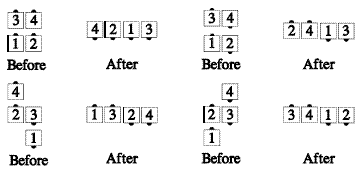

Starting Formation: Tandem Couples, Box Circulate, or Tandem Dancers in a Z (e.g. from a wave after the Ends Fold)
Lead dancers, turning toward the center of the formation, walk in an approximate wide semicircle to become the far ends of a four-dancer line. Trailing dancers step forward as necessary and walk in a small semicircle around the center point of the starting formation to become the centers of the forming line.
For Tandem Couples each couple must begin their semicircles by crossing paths. The dancer on the right has the right-of-way so the Beau allows the Belle to cross in front (Half Sashay).
For Box Circulate and Right or Left-Hand Z formations, the semicircular path of each leader goes around the other trailer. Each trailer moves forward as necessary to the centerline then Trades with the other trailer (using the same hand as the handedness of the formation).
The four dancers in each of the given starting formations always adjust to end in the same four-dancer line. Each dancer will have turned half (180°) to end facing the opposite direction from which they started. Trail Off, including all necessary adjustments, is danced as one continuous motion that cannot be fractionalized.
Trail Off from Tandem Couples will end in a One-Faced line.
Trail Off from a Box Circulate or from a Right- or Left-Hand Z will end in a like-handed Two-Faced Line.
Notes:

Timing: 6